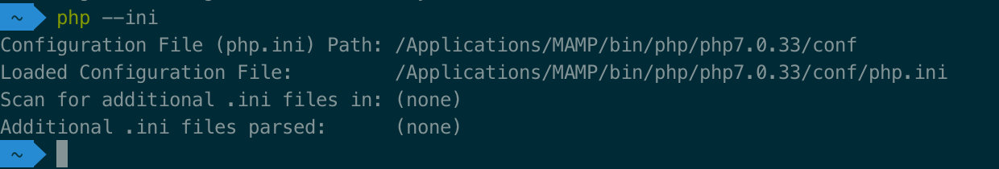
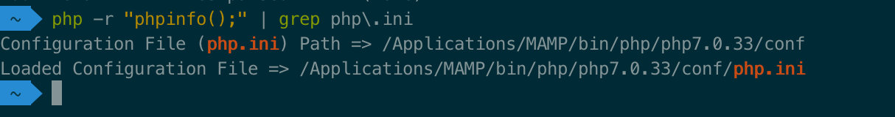
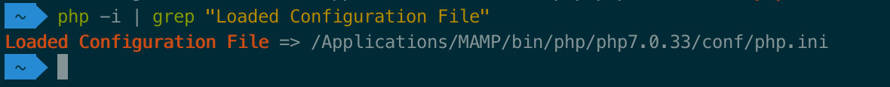
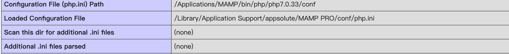

1. 安装扩展
1.1. 查找 php.ini 的位置
1.1.1. Style 1 显示配置文件名
php --ini

1.1.2. Style 2 命令行打印 phpinfo 查找 关键字 php.ini
php -r "phpinfo();" | grep php\.ini

1.1.3. Style 3 phpinfo 信息 查找 关键字 Loaded Configuration File
php -i | grep "Loaded Configuration File"

1.1.4. Style 4 通过浏览器访问 phpinfo() 查看
新建一个 index.php 文件，然后浏览器访问这个文件
<?php
phpinfo();
